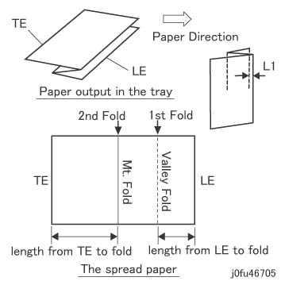
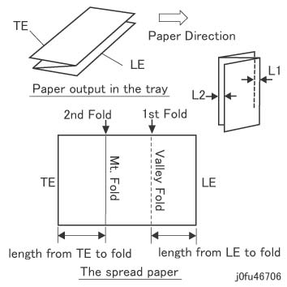
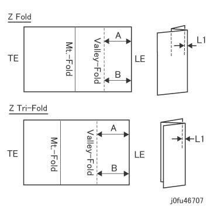
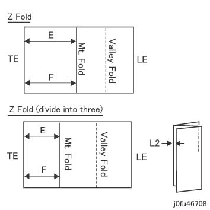

ADJ 50.1.2 Z 折叠 半/一半 纸张, Z 折叠 位置 调整 (DC128) 
目的
当...时 making a Z 折叠 半/一半 纸张 (B4S/A3S, 等.) or Z 折叠 (A4S/LetterS), appropriately 调整 slant of 折叠 和 折叠 位置.
[检查]
输出 折叠 位置 printout or 调整 printout by 以下步骤:
[Revoria 按下 E1136G, ApeosPro C810G, Apeos C8180G, Apeos 7580G, Revoria 按下 EC1100, Revoria 按下 SC180G]
输入 Diag 模式 和 选择 [维护 / Diagnostics] -> [调整 / 其他] -> [装订器 - 折叠 位置 调整] -> [折叠 位置 Printout] -> [折叠 功能] -> [Change 设置] -> 选择 [Z 折叠 半/一半 纸张] or [Z 折叠] -> [OK] -> [纸盘] -> [Change 设置] -> 选择 纸盘 和/与 纸张尺寸 该 requires 调整 -> [OK] -> [启动].
折叠 位置 printout is 输出. 选择 [确认] -> [关闭] to 返回 the [装订器 - 调整 折叠 位置] screen.
[Revoria 按下 PC1120]
输入 the PC Diag screen 和 选择 [子-系统 检查].
在...上 [子-系统 检查] screen, 选择 [DC128].
At [折叠 功能], 选择 [Z 折叠 半/一半 纸张] or [Z 折叠], configure the 打印 设置 如下, 和 选择 [启动].
纸盘: 选择 纸盘 和/与 纸张尺寸 该 requires 调整.
1 面/2 面: 1 面 (默认)
装订针: 编号 (默认)
Face Up/下: Face Up (默认)
Images: Grid (折叠 位置 调整) (默认)
号码 纸张的: 1 (默认)
Copies: 1 (默认)
The 调整 printout is 输出. 选择 [关闭] to 返回 the [子-系统 检查] screen.
Use 折叠 位置 printout or 调整 printout to 检查 折叠 位置.
Z 折叠 半/一半 纸张 (图 1)

(图 1) fu46705
Z 折叠 (图 2)

(图 2) fu46706
符号 in 表
A4S (mm)
LetterS (mm)
B4S (mm)
8K (FBCL/FBHK) (mm)
8K (FBTW) (mm)
A3 S (mm)
L1
2 +/- 2
2 +/- 2
2 +/- 2
2 +/- 2
2 +/- 2
2 +/- 2
L2
2 +/- 2
2 +/- 2
-
-
-
-
折叠 长度 从 the 引线/导向 边缘
(A/B)
98.3 +/- 1
92.5 +/- 1
91 +/- 1
97.5 +/- 1
97 +/- 1
105 +/- 1
折叠 长度 从 the trail 边缘
(E/F)
98.3 +/- 1
92.5 +/- 1
180 +/- 1
193 +/- 1
192 +/- 1
208 +/- 1
用于 折叠 位置 调整, the NVM值 differs 按照 纸张尺寸. NVM 该 可以 设置 是 如下:
设置 NVM Items 设置项目
NVM
适用的 型号/Adjustment 功能
Revoria 按下 E1136G, ApeosPro C810G, Apeos C8180G, Apeos 7580G, Revoria 按下 EC1100, Revoria 按下 SC180G
Revoria 按下 PC1120
[Z 折叠 半/一半 纸张 调整] (g)
调整 和 increase or decrease in NVM值: 调整 当...时 the Z 折叠 半/一半 纸张 is 输出 on 纸盘.
To lengthen (shorten) the 折叠 长度 从 the 引线/导向 边缘, decrease (increase) the 值
To lengthen (shorten) the 折叠 长度 从 the trail 边缘, decrease (increase) the 值
(测量 和/与 margin, 没有 margin (mm))
折叠 长度 (第一个 折叠) 调整 从 the A3 前面 边缘
763-682
g
g
折叠 长度 (第二个/秒 折叠) 调整 从 the A3 后面 边缘
763-691
g
g
折叠 长度 (第一个 折叠) 调整 从 the 11x17’ 前面 边缘
763-683
g
g
折叠 长度 (第二个/秒 折叠) 调整 从 the 11x17’ 后面 边缘
763-692
g
g
折叠 长度 (第一个 折叠) 调整 从 the B4 前面 边缘
763-679
g
g
折叠 长度 (第二个/秒 折叠) 调整 从 the B4 后面 边缘
763-688
g
g
折叠 长度 (第一个 折叠) 调整 从 the 8K (FBTW) 前面 边缘
763-680
g
g
折叠 长度 (第二个/秒 折叠) 调整 从 the 8K (FBTW) 后面 边缘
763-689
g
g
折叠 长度 (第一个 折叠) 调整 从 the 8K (FBCN/FBHK) 前面 边缘
763-681
g
g
折叠 长度 (第二个/秒 折叠) 调整 从 the 8K (FBCN/FBHK) 后面 边缘
763-690
g
g
[Z 折叠 调整] (h)
调整 和 increase or decrease in NVM值: 调整 当...时 the Z 折叠 is 输出 on 纸盘.
To lengthen (shorten) the 折叠 长度 从 the 引线/导向 边缘, decrease (increase) the 值
To lengthen (shorten) the 折叠 长度 从 the trail 边缘, decrease (increase) the 值
(测量 和/与 margin, 没有 margin (mm))
折叠 长度 (第一个 折叠) 调整 从 the A4 前面 边缘
763-678
h
h
折叠 长度 (第二个/秒 折叠) 调整 从 the A4 后面 边缘
763-687
h
h
折叠 长度 (第一个 折叠) 调整 从 the 8.5x11" 引线/导向 边缘
763-677
h
h
折叠 长度 (第二个/秒 折叠) 调整 从 the 8.5 x11" trail 边缘
763-686
h
h
调整
[第一个 折叠 位置 调整]
检查 折叠 位置 printout or 调整 printout 和 调整 by 以下步骤: (图 3)
当...时 A 不 equal B, proceed to 步骤 2.
当...时 A = B 和 此 is 指定值, proceed 到 [第二个/秒 折叠 位置 调整].
当...时 A = B, 但是 此 不是 指定值, proceed to 步骤 5.

(图 3) fu46707
当...时 A 不 equal B, 调整 is made by changing A 位置. (图 4)

The 目的 of adjusting the 位置 of A is to invert 纸张 transported to 装订器 从 IOT 当...时 making a Z 折叠 半/一半 纸张.
当...时 A < B: 松开 the thumb 螺钉 of 图 4, 移动 导轨 到 后面 和 拧紧螺钉 再次.
当...时 A > B: 松开 the thumb 螺钉 of 图 4, 移动 导轨 到 前面 和 拧紧螺钉 再次.
Moving 螺钉 by 3mm 变更 折叠 位置 by 大约. 1mm.

(图 4) ldw450504
返回 检查 步骤 1 和 输出 折叠 位置 printout or 调整 printout to 检查 第一个 折叠 位置.
Repeat Steps 2 to 3 直到 A = B is obtained.
Change the [当前值] or the [值 在...之前 调整] 的 适用的 NVM 项目 by 以下步骤 直到 A(B) = 指定的 值 is achieved.
[Revoria 按下 E1136G, ApeosPro C810G, Apeos C8180G, Apeos 7580G, Revoria 按下 EC1100, Revoria 按下 SC180G]
输入 Diag 模式 和 选择 [装订器 - 折叠 位置 调整] -> 选择 [Z 折叠 半/一半 纸张] or [Z 折叠] -> 选择 引线/导向 边缘 (第一个 折叠) 调整 项目 该 requires 调整 从 the 设置 items (表 2 设置 NVM Items) 在...上 下一个 screen -> increase or decrease the [当前值] -> [OK].
调整 so 该 A(B) = 指定的 值 is obtained. (当...时 the 数据 is incremented by 1, the 宽度 of A(B) becomes 0.1mm larger, 和 L1 becomes 0.1mm smaller. 请注意 L2 is associated 和 becomes 0.1mm larger.)
在...之上 确认, the NVM值 将 updated. 因此, 返回 检查 步骤 1 再次 to 输出 折叠 位置 printout 和 检查 第一个 折叠 位置.
[Revoria 按下 PC1120]
At [折叠 功能], 选择 [Z 折叠 半/一半 纸张] or [Z 折叠], 选择 折叠 长度 从 引线/导向 边缘 (第一个 折叠) 调整 项目 该 requires 调整 从 在...之中 the 设置 items (表 2 设置 NVM Items) 在...上 screen 和 increase or decrease the [值 在...之前 调整].
调整 so 该 A(B) = 指定的 值 is obtained. (当...时 the 数据 is incremented by 1, the 宽度 of E(F) becomes 0.1mm smaller, 和 L2 becomes 0.1mm larger. 请注意 L1 is 也 associated 和 becomes 0.2mm larger.)
当...时 the 调整 printout is 输出, use it to 检查 第一个 折叠 位置 再次.
在...之后 completing the 调整, 选择 [设置] to 更新 the NVM值.
Repeat 步骤 5 直到 A(B) = 指定的 值 is achieved.
在...之后 A(B) 调整为 be = 指定的 值, proceed 到 第二个/秒 折叠 位置 调整.
(At 此 point, 甚至 if L1 不是 at 指定值, it 将 change 值 使用 第二个/秒 折叠 位置 调整. Proceed 到 下一个 步骤.)
[第二个/秒 折叠 位置 调整]
返回 检查 步骤 1 和 输出 折叠 位置 printout or 调整 printout to 检查 第二个/秒 折叠 位置. (图 5)
确认 E 和 F 是 如下所示.
当...时 E 不 equal F, proceed to 步骤 2.
当...时 E = F 和/与 L2 is 指定值, 和 E(F) is the 默认值, 那里 is 编号 调整.
当...时 E = F 和 L2 不是 指定值, or L2 is 指定值 但是 E(F) 不是, proceed to 步骤 5.

(图 5) fu46708
当...时 E 不 equal F, the 调整 is made by changing the E 位置. (图 6)
当...时 E < F: 松开 the thumb 螺钉 of 图 6, 移动 导轨 到 前面 和 拧紧螺钉 再次.
当...时 E > F: 松开 the thumb 螺钉 of 图 6, 移动 导轨 到 后面 和 拧紧螺钉 再次.
Moving 螺钉 by 3mm 变更 折叠 位置 by 大约. 1mm.

(图 6) fe426029
输出 折叠 位置 printout or 调整 printout to 检查 第二个/秒 折叠 位置.
Repeat 调整 steps 1 to 3 的 [第二个/秒 折叠 位置 调整] 直到 E = F is obtained.
Change the [当前值] or the [值 在...之前 调整] 的 适用的 NVM 项目 by 以下步骤 直到 E(F) = 指定的 值 is achieved.
[Revoria 按下 E1136G, ApeosPro C810G, Apeos C8180G, Apeos 7580G, Revoria 按下 EC1100, Revoria 按下 SC180G]
输入 Diag 模式 和 选择 [装订器 - 折叠 位置 调整] -> 选择 [Z 折叠 半/一半 纸张] or [Z 折叠] -> 选择 trail 边缘 (第二个/秒 折叠) 调整 项目 该 requires 调整 从 the 设置 items (表 2 设置 NVM Items) 在...上 下一个 screen -> increase or decrease the [当前值] -> [OK].
调整 直到 E(F) = 指定的 值 is obtained. (当...时 the 数据 is incremented by 1, the 宽度 of E(F) becomes 0.1mm smaller, 和 L2 becomes 0.2mm larger. 请注意 L1 is 也 associated 和 becomes 0.1mm larger.)
在...之上 确认, the NVM值 将 updated. 因此, 返回 检查 步骤 1 再次 to 输出 折叠 位置 printout 和 检查 第二个/秒 折叠 位置.
[Revoria 按下 PC1120]
At [折叠 功能], 选择 [Z 折叠 半/一半 纸张] or [Z 折叠], 选择 折叠 长度 从 trail 边缘 (第二个/秒 折叠) 调整 项目 该 requires 调整 从 在...之中 the 设置 items (表 2 设置 NVM Items) 在...上 screen 和 increase or decrease the [值 在...之前 调整].
调整 直到 E(F) = 指定的 值 is obtained. (当...时 the 数据 is incremented by 1, the 宽度 of E(F) becomes 0.1mm smaller, 和 L2 becomes 0.2mm larger. 请注意 L1 is 也 associated 和 becomes 0.1mm larger.)
当...时 the 调整 printout is 输出, use it to 检查 第二个/秒 折叠 位置 再次.
在...之后 completing the 调整, 选择 [设置] to 更新 the NVM值.
Repeat 步骤 5 直到 E(F) = 指定的 值 is achieved.
在...之后 E(F) = 指定的 值 is obtained, 检查 是否 L1/L2 is 在...之内 指定的 values.
当...时 L1 不是 在...之内 指定值, 返回 [第一个 折叠 位置 调整] 和 repeat [第一个 折叠 位置 调整] 和 [第二个/秒 折叠 位置 调整].
此 调整 已完成 当...时 L1 和 L2 具有 become 指定的 values.